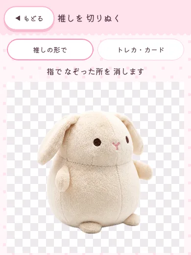
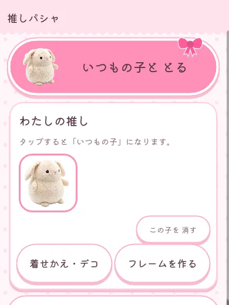
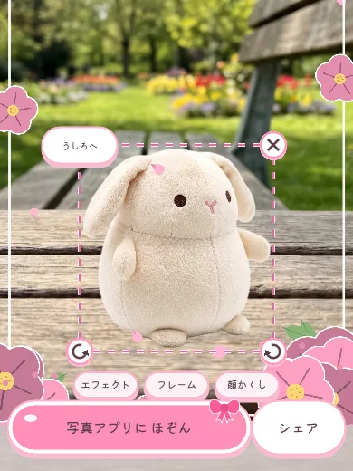
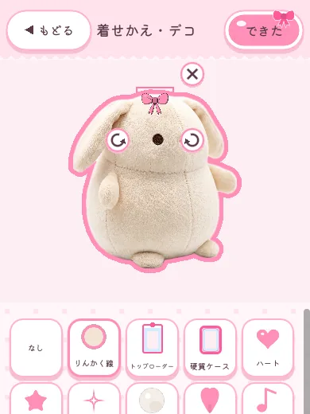
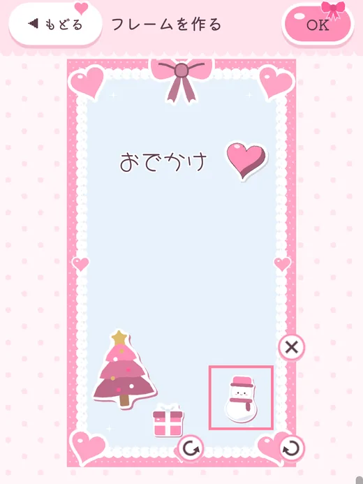
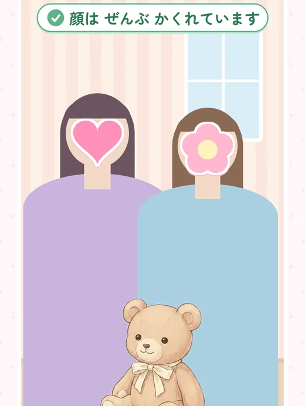
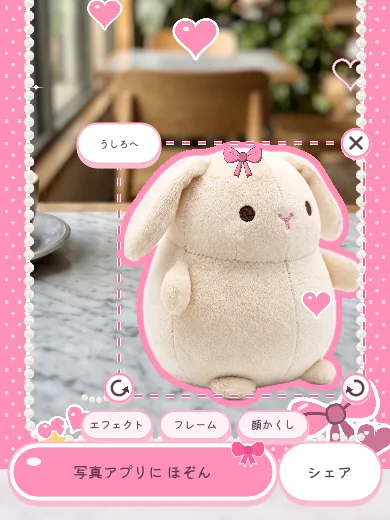

ぬい撮り・
推しパシャ推しと一緒に撮れるカメラ
推しを1回撮れば、いつでもどこでも一緒に撮れる。


どれも
App Store で入手 無料
- iPhone(iOS 17 以上)
- ログインいらず
- 写真は この端末の中だけ
ぬい・
HOW TO
撮り方は3つだけ
いちど

推しを1回 ぬいぐるみ・撮って、 切りぬく アクスタ・ トレカ・ フィギュア・ 缶バッジ。 カメラで 撮るか、 写真から 選ぶと、 推しの 形に 切りぬけます。 
「いつもの子と とる」で呼び出す 切りぬいた推しは 「わたしの推し」に 入ります。 カフェでも 旅先でも、 カメラを 開けば 推しが となりに。 
撮り方をえらんで、 となりにパシャ ならぶ・ 肩に のせる・ 手のひらに のせる・ 奥と 手前・ 大きく。 撮ったあとに、 位置や 大きさを 直せます。
POINT
推しとの写真を、もっとかわいく
推し色・

推し色のふち・ 推し色は飾り 55色。 頭・ 耳・ 首の 飾りや、 きらきら・ ハート・ 花びら・ ペンライトの海 などの エフェクトも、 推し色に そまります。 
自分だけのフレーム 形・色・ 文字・ スタンプを えらんで、 推しごとの フレームを 作れます。 文字は 指で 動かせます。 
自撮りでも、顔は かわいいかくせる 顔かくし スタンプが 顔に のって、 動いても ついてきます。 保存の 前に 「ぜんぶ かくれています」を 確かめられます。 
プリクラみたいに 推し・仕上げ 飾り・ 顔かくしの 位置や 大きさ、 フレームと エフェクトを あとから 直せます。 写真アプリに 保存して、 そのまま シェア。
写真はこの端末の中だけ
カメラの
アプリ内課金と広告のこと
- フレーム
- 自分で
作れる フレームは 5こまで。 もっと 作りたい 方は、 +5こ・ 「フレームたくさん(最大100こ)」を 追加できます。 - 飾り
- 飾りの
パックは 1回の 購入で ずっと 使えます。 機種変更の ときは 「購入を復元」で もどせます。 - 広告
- 鍵の
スタンプは、 動画広告を 見ると 1つずつ 使えるように なります。 写真を 保存した あとに、 ときどき 広告が 出ます。 「広告なし」を 購入すると 出なくなります。
よくある質問
ほかに困ったことはサポートへどうぞ。
推しを毎回持って行かないといけないの?
いいえ。
アクスタやトレカでも撮れますか?
はい。
撮った写真はどこに保存されますか?
「写真アプリにほぞん」を
前に撮った推しを、すぐ呼び出せますか?
はい。